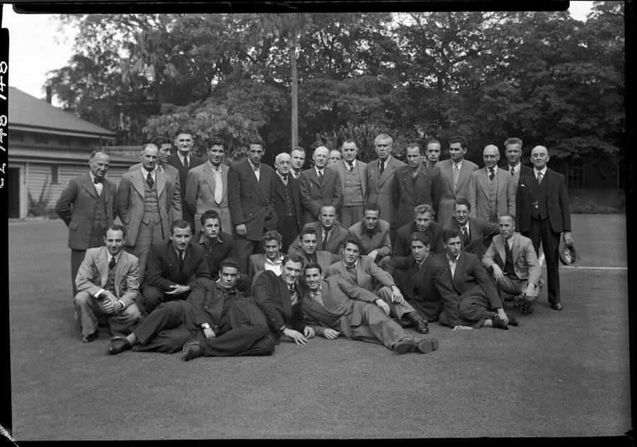

ハーグ市、トンネルをめぐる対立で裁判所へ、請負業者も訴訟をちらつかせるDen Haag naar rechter om tunnelvete, aannemer dreigt ook met rechtszaakハーグ市と建設会社Struktonは、フベルトゥストンネルの改修工事をめぐって対立している。市は裁判所に訴える
ハーグ市、トンネルをめぐる対立で裁判所へ、請負業者も訴訟をちらつかせるDen Haag naar rechter om tunnelvete, aannemer dreigt ook met rechtszaakハーグ市と建設会社Struktonは、フベルトゥストンネルの改修工事をめぐって対立している。市は裁判所に訴える クウェートでのドローン攻撃でイタリア人2人が死亡、イランは攻撃を否定Twee Italianen omgekomen bij droneaanval in Koeweit, Iran ontkent agressie木曜日、クウェートに対するイランによるものとみられるドローン攻撃で、武器メーカー、ラインメタルのイタリア人技術者2人が死亡した。クウェート人1人と
クウェートでのドローン攻撃でイタリア人2人が死亡、イランは攻撃を否定Twee Italianen omgekomen bij droneaanval in Koeweit, Iran ontkent agressie木曜日、クウェートに対するイランによるものとみられるドローン攻撃で、武器メーカー、ラインメタルのイタリア人技術者2人が死亡した。クウェート人1人と ドイツの緊急対応機関、運河に人体の一部があるとの通報で出動したが、見つかったのは人形Duitse hulpdiensten rukken uit voor lichaamsdelen in kanaal, maar vinden popハンブルク警察は木曜日夜、市内の運河に人体の一部とみられるものがあるとの通報を受け、大規模に出動した。引き上げてみると、それは
ドイツの緊急対応機関、運河に人体の一部があるとの通報で出動したが、見つかったのは人形Duitse hulpdiensten rukken uit voor lichaamsdelen in kanaal, maar vinden popハンブルク警察は木曜日夜、市内の運河に人体の一部とみられるものがあるとの通報を受け、大規模に出動した。引き上げてみると、それは ベシクタシュ対イスラエルのハポエル・ベエルシェバ戦、ジョージアで乱闘騒ぎにより中断Besiktas tegen Israëlisch Hapoel Beer-Sheva in Georgië stilgelegd na vechtpartijenトルコのベシクタシュとイスラエルのハポエル・ベエルシェバによるヨーロッパリーグの試合は、前半に長時間中断した。その理由は
ベシクタシュ対イスラエルのハポエル・ベエルシェバ戦、ジョージアで乱闘騒ぎにより中断Besiktas tegen Israëlisch Hapoel Beer-Sheva in Georgië stilgelegd na vechtpartijenトルコのベシクタシュとイスラエルのハポエル・ベエルシェバによるヨーロッパリーグの試合は、前半に長時間中断した。その理由は ニコラース・フール、LGBTIの人々に対する態度の硬化を目撃：「スケープゴート政治」Nicolaas Veul ziet houding tegenover lhbti'ers verharden: 'Zondebokpolitiek'ニコラース・フールはデビュー作『Altijd de ander』で、LGBTQIA+コミュニティに対する態度が過去10年間でどう変化したかを示している。以前、彼は
ニコラース・フール、LGBTIの人々に対する態度の硬化を目撃：「スケープゴート政治」Nicolaas Veul ziet houding tegenover lhbti'ers verharden: 'Zondebokpolitiek'ニコラース・フールはデビュー作『Altijd de ander』で、LGBTQIA+コミュニティに対する態度が過去10年間でどう変化したかを示している。以前、彼は ブニダが2ゴールでアヤックスをトゥーン戦勝利に導く、ベルフハイスが華麗な締めくくりBounida leidt Ajax langs Thun met twee goals, Berghuis zorgt voor fraai slotakkoordアヤックスはカンファレンスリーグで好調を維持している。アムステルダムのチームはヨハン・クライフ・アレーナで、現在9位のFCトゥーンに4-0で快勝した。
ブニダが2ゴールでアヤックスをトゥーン戦勝利に導く、ベルフハイスが華麗な締めくくりBounida leidt Ajax langs Thun met twee goals, Berghuis zorgt voor fraai slotakkoordアヤックスはカンファレンスリーグで好調を維持している。アムステルダムのチームはヨハン・クライフ・アレーナで、現在9位のFCトゥーンに4-0で快勝した。 大幅にメンバーを入れ替えたアヤックス、デ・クラシケル直前にヨーロッパで快勝Fors gewijzigd Ajax boekt vlak voor De Klassieker overtuigende zege in Europaアヤックスは、フェイエノールトとのデ・クラシケルの3日前に、カンファレンスリーグで快勝を収めた。アムステルダムの同クラブは、大幅に変更した布陣で勝利した。
大幅にメンバーを入れ替えたアヤックス、デ・クラシケル直前にヨーロッパで快勝Fors gewijzigd Ajax boekt vlak voor De Klassieker overtuigende zege in Europaアヤックスは、フェイエノールトとのデ・クラシケルの3日前に、カンファレンスリーグで快勝を収めた。アムステルダムの同クラブは、大幅に変更した布陣で勝利した。 オランダ、植民地時代に奪った銃2丁をスリランカに返還Nederland geeft twee buitgemaakte geweren uit koloniale tijd terug aan Sri Lankaオランダは、18世紀に奪われた銃2丁をスリランカに返還する。教育・文化・科学大臣レッツェルト氏が明らかにした。
オランダ、植民地時代に奪った銃2丁をスリランカに返還Nederland geeft twee buitgemaakte geweren uit koloniale tijd terug aan Sri Lankaオランダは、18世紀に奪われた銃2丁をスリランカに返還する。教育・文化・科学大臣レッツェルト氏が明らかにした。 ブマ氏、来週に各会派代表との会談を希望Buma wil volgende week in gesprek met fractievoorzitters国務院副議長のシーブラント・ブマ氏は、来週、下院の各会派代表を招いて会談したい考えだと、報道官が伝えた。
ブマ氏、来週に各会派代表との会談を希望Buma wil volgende week in gesprek met fractievoorzitters国務院副議長のシーブラント・ブマ氏は、来週、下院の各会派代表を招いて会談したい考えだと、報道官が伝えた。 イスラエルのカッツ大臣が圧力を強め、ガザでの新たな攻勢をちらつかせるIsraëlische minister Katz voert druk op en dreigt met nieuw offensief in Gazaイスラエルのカッツ国防相は、ハマスが武装解除しなければガザで攻勢に出ると改めて警告している。カッツ氏によれば、イスラエルは現在70％
イスラエルのカッツ大臣が圧力を強め、ガザでの新たな攻勢をちらつかせるIsraëlische minister Katz voert druk op en dreigt met nieuw offensief in Gazaイスラエルのカッツ国防相は、ハマスが武装解除しなければガザで攻勢に出ると改めて警告している。カッツ氏によれば、イスラエルは現在70％ ヤデ・フルーネワウト、ヴィンテルスヴァイクの天然氷マラソンで優勝Jade Groenewoud pakt marathonzege op natuurijs in Winterswijk今冬初の天然氷でのスケートマラソンは、女子ではヤデ・フルーネワウトが優勝した。ロイヤルA-ウェア所属でヘンゲロー出身の22歳は、ヴィンテルスヴァイクで
ヤデ・フルーネワウト、ヴィンテルスヴァイクの天然氷マラソンで優勝Jade Groenewoud pakt marathonzege op natuurijs in Winterswijk今冬初の天然氷でのスケートマラソンは、女子ではヤデ・フルーネワウトが優勝した。ロイヤルA-ウェア所属でヘンゲロー出身の22歳は、ヴィンテルスヴァイクで 妊娠中の収容者が、警察官たちがハンバーガーを買いに行っている間にパトカーで逃走Zwangere gevangene ontsnapt in politieauto terwijl agenten hamburgers halen妊娠中の収容者が今週、妊娠検診から戻った際に、米ニューメキシコ州の刑務所から逃走した。彼女は盗
妊娠中の収容者が、警察官たちがハンバーガーを買いに行っている間にパトカーで逃走Zwangere gevangene ontsnapt in politieauto terwijl agenten hamburgers halen妊娠中の収容者が今週、妊娠検診から戻った際に、米ニューメキシコ州の刑務所から逃走した。彼女は盗 ブマ氏、すべての会派代表を招待、専門家との協議もBuma nodigt alle fractievoorzitters uit, ook gesprek met deskundigenシブランド・ブマ氏は来週から、下院のすべての会派代表と、少数派のイェッテン内閣とのより良い協力について話し合いたい考えだ。
ブマ氏、すべての会派代表を招待、専門家との協議もBuma nodigt alle fractievoorzitters uit, ook gesprek met deskundigenシブランド・ブマ氏は来週から、下院のすべての会派代表と、少数派のイェッテン内閣とのより良い協力について話し合いたい考えだ。 フェルスタッペン、ラッセルとの騒動についてこれ以上語らず「ベガスですべて話した」Verstappen wil niets meer kwijt over rel met Russell: 'Heb alles gezegd in Vegas'マックス・フェルスタッペンは、ジョージ・ラッセルとの騒動にこれ以上言葉を費やしたくないとしている。レッドブルのドライバーは木曜日、カタールで、先日の言葉の応酬について
フェルスタッペン、ラッセルとの騒動についてこれ以上語らず「ベガスですべて話した」Verstappen wil niets meer kwijt over rel met Russell: 'Heb alles gezegd in Vegas'マックス・フェルスタッペンは、ジョージ・ラッセルとの騒動にこれ以上言葉を費やしたくないとしている。レッドブルのドライバーは木曜日、カタールで、先日の言葉の応酬について ブラックフライデーに向けた購買意欲が低下「刺激が取り除かれた」Koopdrang voor Black Friday is afgenomen: 'Prikkels zijn weggehaald'ブラックフライデーは明日だが、ここ数週間、割引コードがすでに飛び交っていた。しかし、小売業者が期待する購買意欲は、かえってそれによって
ブラックフライデーに向けた購買意欲が低下「刺激が取り除かれた」Koopdrang voor Black Friday is afgenomen: 'Prikkels zijn weggehaald'ブラックフライデーは明日だが、ここ数週間、割引コードがすでに飛び交っていた。しかし、小売業者が期待する購買意欲は、かえってそれによって UEFA、インファンティーノ氏支持をめぐるKNVBへの圧力の可能性について調査を求めるUEFA wil onderzoek naar mogelijke druk op KNVB om Infantino te steunenUEFAは、KNVBや他の協会がFIFA会長ジャンニ・インファンティーノ氏を支持するよう圧力を受けたかどうかを調査させたいとしている。欧州の同連盟はこれにより
UEFA、インファンティーノ氏支持をめぐるKNVBへの圧力の可能性について調査を求めるUEFA wil onderzoek naar mogelijke druk op KNVB om Infantino te steunenUEFAは、KNVBや他の協会がFIFA会長ジャンニ・インファンティーノ氏を支持するよう圧力を受けたかどうかを調査させたいとしている。欧州の同連盟はこれにより アイスランドで漁船の死亡事故、乗組員は氷のように冷たい海に何時間もDodelijk ongeluk met vissersschip in IJsland, bemanning urenlang in ijskoude zeeアイスランドの東100キロ余りの沖合で漁船がトラブルに見舞われ、沈没した。事故は昨日起きた。17人の乗組員は
アイスランドで漁船の死亡事故、乗組員は氷のように冷たい海に何時間もDodelijk ongeluk met vissersschip in IJsland, bemanning urenlang in ijskoude zeeアイスランドの東100キロ余りの沖合で漁船がトラブルに見舞われ、沈没した。事故は昨日起きた。17人の乗組員は ドイツの教区は虐待被害者に550,000ユーロを支払わなければならないDuits bisdom moet misbruikslachtoffer 550.000 euro betalenケルン大司教区は、司祭による性的虐待の被害者に慰謝料として記録的な金額の550,000ユーロを支払わなければならない。その金額は
ドイツの教区は虐待被害者に550,000ユーロを支払わなければならないDuits bisdom moet misbruikslachtoffer 550.000 euro betalenケルン大司教区は、司祭による性的虐待の被害者に慰謝料として記録的な金額の550,000ユーロを支払わなければならない。その金額は
U-21オランダ代表、欧州選手権でノルウェーと再戦へ、ドイツとベルギーも同組Jong Oranje treft Noorwegen opnieuw op EK, ook Duitsland en België in pouleU-21オランダ代表は来年のU-21欧州選手権のグループステージで、ドイツ、ノルウェー、ベルギーと対戦する。木曜日夜にベオグラードで行われた抽選で決まった。 エルニーニョにより南北アメリカで高潮と高波が発生El Niño zorgt van Noord- tot Zuid-Amerika voor hoogwater en hoge golven太平洋の西部は高潮と高波に見舞われている。そのため、チリから西海岸に至るまでの地域で影響が出ている。
エルニーニョにより南北アメリカで高潮と高波が発生El Niño zorgt van Noord- tot Zuid-Amerika voor hoogwater en hoge golven太平洋の西部は高潮と高波に見舞われている。そのため、チリから西海岸に至るまでの地域で影響が出ている。 エルニーニョが太平洋沿岸に高波をもたらし、月が水位をさらに押し上げるEl Niño zorgt voor hoge golven langs Pacifische kust, maan stuwt water verder op太平洋の西半分は高潮と高波に見舞われている。そのため、チリから西海岸までの地域で影響が出ている
エルニーニョが太平洋沿岸に高波をもたらし、月が水位をさらに押し上げるEl Niño zorgt voor hoge golven langs Pacifische kust, maan stuwt water verder op太平洋の西半分は高潮と高波に見舞われている。そのため、チリから西海岸までの地域で影響が出ている 初の女性IOC副会長デフランツ氏（74）が死去Eerste vrouwelijke IOC-vicevoorzitter DeFrantz (74) overleden1997年に国際オリンピック委員会（IOC）初の女性副会長となった米国人のアニータ・デフランツ氏が、74歳で死去した…
初の女性IOC副会長デフランツ氏（74）が死去Eerste vrouwelijke IOC-vicevoorzitter DeFrantz (74) overleden1997年に国際オリンピック委員会（IOC）初の女性副会長となった米国人のアニータ・デフランツ氏が、74歳で死去した… スケート熱が高まるが、残り時間はわずかSchaatskoorts loopt op, maar de tijd dringtここ数日間は快晴だったが、凍てつくような寒さでもあった。とりわけ水曜日は、身を切るような東風によって体感温度が低くなった。日中、気温は
スケート熱が高まるが、残り時間はわずかSchaatskoorts loopt op, maar de tijd dringtここ数日間は快晴だったが、凍てつくような寒さでもあった。とりわけ水曜日は、身を切るような東風によって体感温度が低くなった。日中、気温は VVDのイェシルギョズ党首への批判の声が増え、圧力が高まるMeer kritische geluiden over VVD-leider Yesilgöz, druk neemt toe昨夜、ディラン・イェシルギョズ氏のVVD党首としての立場に仕掛けられた小さな爆弾は、今日もなお反響を呼んでいる。多くのVVD党員は沈黙しているが、一部はその批判を共有している
VVDのイェシルギョズ党首への批判の声が増え、圧力が高まるMeer kritische geluiden over VVD-leider Yesilgöz, druk neemt toe昨夜、ディラン・イェシルギョズ氏のVVD党首としての立場に仕掛けられた小さな爆弾は、今日もなお反響を呼んでいる。多くのVVD党員は沈黙しているが、一部はその批判を共有している 冷凍庫で発見された死亡男性、犯罪によって死亡したのではなかったOverleden man in vrieskist niet door misdrijf om het leven gekomenユトレヒトで冷凍庫の中から死亡した男性が発見された件に関する警察と検察庁の捜査により、その兆候はないことが示された
冷凍庫で発見された死亡男性、犯罪によって死亡したのではなかったOverleden man in vrieskist niet door misdrijf om het leven gekomenユトレヒトで冷凍庫の中から死亡した男性が発見された件に関する警察と検察庁の捜査により、その兆候はないことが示された 母親が息子（12）を刺殺したと自白、しかし何が彼女を駆り立てたのかは依然不明Moeder bekent doodsteken zoon (12), maar nog onduidelijk wat haar dreefマルワ・S.は、自宅で息子の胸をナイフで2回刺したと自白した。エールベーク出身のこの女性は、行動科学的検査のため収容されることになる
母親が息子（12）を刺殺したと自白、しかし何が彼女を駆り立てたのかは依然不明Moeder bekent doodsteken zoon (12), maar nog onduidelijk wat haar dreefマルワ・S.は、自宅で息子の胸をナイフで2回刺したと自白した。エールベーク出身のこの女性は、行動科学的検査のため収容されることになる 科学者ら、これまでで最も弱い超新星を発見：「消えることを拒んだ」Wetenschappers ontdekken zwakste supernova tot nu toe: 'Weigerde uit te gaan'天文学者らは、超新星が常に極めて明るいとは限らないことを発見した。彼らはこれまでで最も弱い超新星の発見について、研究…で記述している
科学者ら、これまでで最も弱い超新星を発見：「消えることを拒んだ」Wetenschappers ontdekken zwakste supernova tot nu toe: 'Weigerde uit te gaan'天文学者らは、超新星が常に極めて明るいとは限らないことを発見した。彼らはこれまでで最も弱い超新星の発見について、研究…で記述している ヘーレンフェーン中心部の一部、花火の発見を受け数時間封鎖、2人を逮捕Deel centrum Heerenveen urenlang afgezet na vondst vuurwerk, twee aanhoudingenヘーレンフェーンの中心部の一部は、ある住宅で強力な花火が発見された後、数時間にわたり封鎖された。その花火はすでに、Explo…によって
ヘーレンフェーン中心部の一部、花火の発見を受け数時間封鎖、2人を逮捕Deel centrum Heerenveen urenlang afgezet na vondst vuurwerk, twee aanhoudingenヘーレンフェーンの中心部の一部は、ある住宅で強力な花火が発見された後、数時間にわたり封鎖された。その花火はすでに、Explo…によって クウェートへのイランのドローン攻撃でイタリア人2人が死亡Twee Italianen omgekomen bij Iraanse droneaanval op Koeweitクウェートへのイランのドローン攻撃でイタリア人2人が死亡した。2人はドイツの兵器メーカー、ラインメタルの技術者として現地で働いていた。イタリアの…によれば
クウェートへのイランのドローン攻撃でイタリア人2人が死亡Twee Italianen omgekomen bij Iraanse droneaanval op Koeweitクウェートへのイランのドローン攻撃でイタリア人2人が死亡した。2人はドイツの兵器メーカー、ラインメタルの技術者として現地で働いていた。イタリアの…によれば フランス人俳優ジェラール・ドパルデュー、レイプで裁判へFranse acteur Gérard Depardieu moet terechtstaan voor verkrachting俳優ジェラール・ドパルデューは、2018年のレイプで裁判にかけられることになった。77歳のフランス人は、パリの控訴院に裁判を取りやめるよう求めていた
フランス人俳優ジェラール・ドパルデュー、レイプで裁判へFranse acteur Gérard Depardieu moet terechtstaan voor verkrachting俳優ジェラール・ドパルデューは、2018年のレイプで裁判にかけられることになった。77歳のフランス人は、パリの控訴院に裁判を取りやめるよう求めていた UEFA、世界サッカー連盟からの圧力に関するデ・ヨング氏の発言を受け、FIFAに調査を求めるUEFA roept FIFA op tot onderzoek na uitspraken De Jong over druk van wereldvoetbalbond欧州サッカー連盟UEFAは、FIFAのジャンニ・インファンティーノ会長を支持するようオランダサッカー協会（KNVB）がどのように圧力を受けたかについて、調査を行うよう求めている。そこ
UEFA、世界サッカー連盟からの圧力に関するデ・ヨング氏の発言を受け、FIFAに調査を求めるUEFA roept FIFA op tot onderzoek na uitspraken De Jong over druk van wereldvoetbalbond欧州サッカー連盟UEFAは、FIFAのジャンニ・インファンティーノ会長を支持するようオランダサッカー協会（KNVB）がどのように圧力を受けたかについて、調査を行うよう求めている。そこ ライブ｜欧州サッカー｜アヤックス、オランダ勢にとって慌ただしい夜の口火を切るLive | Europees voetbal | Ajax opent drukke avond Nederlandse clubsこのライブブログへようこそ！私たちはリプケ・バッケルとスース・テン・カテです。今夜の欧州サッカーの最新情報をお届けします。AZとNECが…に出場します
ライブ｜欧州サッカー｜アヤックス、オランダ勢にとって慌ただしい夜の口火を切るLive | Europees voetbal | Ajax opent drukke avond Nederlandse clubsこのライブブログへようこそ！私たちはリプケ・バッケルとスース・テン・カテです。今夜の欧州サッカーの最新情報をお届けします。AZとNECが…に出場します ライブ｜欧州サッカー｜アヤックスがトゥーン相手にリード、後にNEC、トゥウェンテ、AZLive | Europees voetbal | Ajax leidt tegen Thun, later NEC, Twente en AZこのライブブログへようこそ！私たちはリプケ・バッケルとスース・テン・カテで、今夜の欧州サッカーの最新情報をお届けします。AZとNECはdで試合に臨む
ライブ｜欧州サッカー｜アヤックスがトゥーン相手にリード、後にNEC、トゥウェンテ、AZLive | Europees voetbal | Ajax leidt tegen Thun, later NEC, Twente en AZこのライブブログへようこそ！私たちはリプケ・バッケルとスース・テン・カテで、今夜の欧州サッカーの最新情報をお届けします。AZとNECはdで試合に臨む ライブ｜欧州サッカー｜アヤックスが前半終了時点で2-0とリード、続いてNEC、トゥウェンテ、AZLive | Europees voetbal | Ajax leidt bij rust met 2-0, later NEC, Twente en AZこのライブブログへようこそ！私たちはリプケ・バッケルとスース・テン・カテです。今夜の欧州サッカーの最新情報をお伝えします。AZとNECは
ライブ｜欧州サッカー｜アヤックスが前半終了時点で2-0とリード、続いてNEC、トゥウェンテ、AZLive | Europees voetbal | Ajax leidt bij rust met 2-0, later NEC, Twente en AZこのライブブログへようこそ！私たちはリプケ・バッケルとスース・テン・カテです。今夜の欧州サッカーの最新情報をお伝えします。AZとNECは ライブ｜欧州サッカー｜アレーナでアヤックスの大勝を祝う、ウェグホルストの兄弟はトゥエンテのアウェー応援席にLive | Europees voetbal | ArenA viert ruime zege Ajax, broer Weghorst in uitvak Twenteこのライブブログへようこそ！私たちはリプケ・バッケルとスース・テン・カテです。今夜の欧州サッカーの最新情報をお届けします。AZとNECは
ライブ｜欧州サッカー｜アレーナでアヤックスの大勝を祝う、ウェグホルストの兄弟はトゥエンテのアウェー応援席にLive | Europees voetbal | ArenA viert ruime zege Ajax, broer Weghorst in uitvak Twenteこのライブブログへようこそ！私たちはリプケ・バッケルとスース・テン・カテです。今夜の欧州サッカーの最新情報をお届けします。AZとNECは ライブ｜欧州サッカー｜NECが同点弾を許し、AZとトウェンテがリードを許すLive | Europees voetbal | NEC incasseert gelijkmaker, AZ en Twente staan achterこのライブブログへようこそ！私たちはリプケ・バッケルとスース・テン・カテで、今夜の欧州サッカーの模様を随時お伝えします。AZとNECが出場します。
ライブ｜欧州サッカー｜NECが同点弾を許し、AZとトウェンテがリードを許すLive | Europees voetbal | NEC incasseert gelijkmaker, AZ en Twente staan achterこのライブブログへようこそ！私たちはリプケ・バッケルとスース・テン・カテで、今夜の欧州サッカーの模様を随時お伝えします。AZとNECが出場します。 サイクリングチームVisma - Lease a Bike、Vismaのタイトルスポンサー撤退で新名称へWielerploeg Visma - Lease a Bike krijgt nieuwe naam met vertrek Visma als naamsponsorサイクリングチームVisma - Lease a Bikeは来年から別の名称になる。どの名称になるかはまだ分かっておらず、12月に明らかになる。
サイクリングチームVisma - Lease a Bike、Vismaのタイトルスポンサー撤退で新名称へWielerploeg Visma - Lease a Bike krijgt nieuwe naam met vertrek Visma als naamsponsorサイクリングチームVisma - Lease a Bikeは来年から別の名称になる。どの名称になるかはまだ分かっておらず、12月に明らかになる。 自営業者向け就業不能保険、さらに延期Arbeidsongeschiktheidsverzekering voor zzp'ers verder uitgesteld自営業者向けの就業不能保険は、当初の予想よりもさらに長く待たされることになる。当初、2030年にこの保険を導入することはかろうじて実現可能と思われていた
自営業者向け就業不能保険、さらに延期Arbeidsongeschiktheidsverzekering voor zzp'ers verder uitgesteld自営業者向けの就業不能保険は、当初の予想よりもさらに長く待たされることになる。当初、2030年にこの保険を導入することはかろうじて実現可能と思われていた 母親刺殺にハウテンで悲しみ、女性は家庭内暴力の支援を受けていたVerdriet in Houten om doodsteken moeder, vrouw kreeg hulp bij huiselijk geweldハウテンでは各戸に半旗が掲げられ、住宅前の芝生には近隣住民が花やぬいぐるみ、カードを供えている。34歳の…から1日後
母親刺殺にハウテンで悲しみ、女性は家庭内暴力の支援を受けていたVerdriet in Houten om doodsteken moeder, vrouw kreeg hulp bij huiselijk geweldハウテンでは各戸に半旗が掲げられ、住宅前の芝生には近隣住民が花やぬいぐるみ、カードを供えている。34歳の…から1日後 ロナウドは1000ゴールまであと何ゴール必要か？幻のゴールをめぐる議論Hoeveel goals moet Ronaldo nog voor zijn duizendste? Discussie over spookdoelpuntサッカー界は長らく、クリスティアーノ・ロナウドが1000ゴールという節目に到達するまでの歩みを一緒に数えてきた。しかし、その集計は正しいのだろうか。先週火曜日には報じら……
ロナウドは1000ゴールまであと何ゴール必要か？幻のゴールをめぐる議論Hoeveel goals moet Ronaldo nog voor zijn duizendste? Discussie over spookdoelpuntサッカー界は長らく、クリスティアーノ・ロナウドが1000ゴールという節目に到達するまでの歩みを一緒に数えてきた。しかし、その集計は正しいのだろうか。先週火曜日には報じら…… 冷凍庫から遺体が見つかったことは、トラウマを抱えた若者たちをめぐるより広範な問題を示しているVondst van lichaam in vriezer wijst op breder probleem met getraumatiseerde jongeren支援者らによると、今週ユトレヒトのパイルスウェールト地区で冷凍庫の中から見つかったシリア人の少年モハメドの死は、単独の事案ではな
冷凍庫から遺体が見つかったことは、トラウマを抱えた若者たちをめぐるより広範な問題を示しているVondst van lichaam in vriezer wijst op breder probleem met getraumatiseerde jongeren支援者らによると、今週ユトレヒトのパイルスウェールト地区で冷凍庫の中から見つかったシリア人の少年モハメドの死は、単独の事案ではな ドーピング検査を受けなかったドイツ代表フライガング選手、2027年ワールドカップを逃すGemiste dopingcontroles kosten Duits international Freigang WK 2027ドイツ代表のラウラ・フライガング選手は、ドーピング検査を3回受けなかったため、1年間の出場停止処分を受けた。アイントラハト・フランクフルト所属のこのサッカー選手は…
ドーピング検査を受けなかったドイツ代表フライガング選手、2027年ワールドカップを逃すGemiste dopingcontroles kosten Duits international Freigang WK 2027ドイツ代表のラウラ・フライガング選手は、ドーピング検査を3回受けなかったため、1年間の出場停止処分を受けた。アイントラハト・フランクフルト所属のこのサッカー選手は… スペイン人のエルナンデス・デ・コス氏がECB総裁に、クラース・クノット氏は欧州の要職を逃すSpanjaard Hernández de Cos wordt president ECB, Klaas Knot grijpt naast Europese topfunctieスペイン人のパブロ・エルナンデス・デ・コス氏が欧州中央銀行（ECB）の新総裁となる。2月にフランス人のクリスティーヌ・ラガルド氏の後任となる。同氏は…
スペイン人のエルナンデス・デ・コス氏がECB総裁に、クラース・クノット氏は欧州の要職を逃すSpanjaard Hernández de Cos wordt president ECB, Klaas Knot grijpt naast Europese topfunctieスペイン人のパブロ・エルナンデス・デ・コス氏が欧州中央銀行（ECB）の新総裁となる。2月にフランス人のクリスティーヌ・ラガルド氏の後任となる。同氏は… 少なくとも245人の少女をオンラインで性的に虐待した男に、懲役8年とtbsの判決Man krijgt acht jaar cel en tbs voor online seksueel misbruik van zeker 245 meisjesリンブルフ州のヘルテン村出身の40歳男性は、懲役8年と強制治療を伴うtbs措置を言い渡された。バス・P.はオンラインでの…の罪を犯した。
少なくとも245人の少女をオンラインで性的に虐待した男に、懲役8年とtbsの判決Man krijgt acht jaar cel en tbs voor online seksueel misbruik van zeker 245 meisjesリンブルフ州のヘルテン村出身の40歳男性は、懲役8年と強制治療を伴うtbs措置を言い渡された。バス・P.はオンラインでの…の罪を犯した。 下院、ガザ向け冬季緊急支援パッケージに1000万ユーロを求める、内閣は異議なしKamer wil 10 miljoen euro voor winternoodpakket Gaza, kabinet heeft geen bezwaar下院は、内閣がガザへの緊急支援として1000万ユーロをできるだけ早く拠出するよう求めている。冬が近づく中、その資金は…に使われなければならない。
下院、ガザ向け冬季緊急支援パッケージに1000万ユーロを求める、内閣は異議なしKamer wil 10 miljoen euro voor winternoodpakket Gaza, kabinet heeft geen bezwaar下院は、内閣がガザへの緊急支援として1000万ユーロをできるだけ早く拠出するよう求めている。冬が近づく中、その資金は…に使われなければならない。 裁判所、ひそかな撮影による悪用を受け、Metaのメガネの禁止について判断へRechter beslist over verbod op Meta-bril vanwege misbruik met stiekem filmen消費者協会と財団のOfflimitsおよびThe Firewallは、Metaのカメラ付きメガネの禁止を求めている。3団体は本日、その禁止を訴えた。
裁判所、ひそかな撮影による悪用を受け、Metaのメガネの禁止について判断へRechter beslist over verbod op Meta-bril vanwege misbruik met stiekem filmen消費者協会と財団のOfflimitsおよびThe Firewallは、Metaのカメラ付きメガネの禁止を求めている。3団体は本日、その禁止を訴えた。 ドイツでテロ攻撃の準備をした疑いでイラク人2人を逮捕Twee Irakezen opgepakt in Duitsland voor voorbereiden terroristische aanslagenドイツで31歳と34歳のイラク人男性2人が、シナゴーグに対するものを含む複数のテロ攻撃を計画した疑いで逮捕された。
ドイツでテロ攻撃の準備をした疑いでイラク人2人を逮捕Twee Irakezen opgepakt in Duitsland voor voorbereiden terroristische aanslagenドイツで31歳と34歳のイラク人男性2人が、シナゴーグに対するものを含む複数のテロ攻撃を計画した疑いで逮捕された。 マネーロンダリングでアムステルダムのタクシー600台超を差し押さえBeslag op meer dan 600 Amsterdamse taxi's vanwege witwassen警察は大規模なマネーロンダリング事件で、アムステルダムのタクシー600台超を行政手続きにより差し押さえた。警察によると、26社が関与している可能性があるという。
マネーロンダリングでアムステルダムのタクシー600台超を差し押さえBeslag op meer dan 600 Amsterdamse taxi's vanwege witwassen警察は大規模なマネーロンダリング事件で、アムステルダムのタクシー600台超を行政手続きにより差し押さえた。警察によると、26社が関与している可能性があるという。 キミッヒ、病気のムシアラをめぐるバイエルンのレジェンドたちの「理解不能な」発言を批判Kimmich hekelt 'onbegrijpelijke' uitspraken Bayern-iconen over zieke Musialaバイエルン・ミュンヘンのミッドフィールダー、ジョシュア・キミッヒは、2人の発言を受けて、クラブのレジェンドであるウリ・ヘーネスとカール＝ハインツ・ルンメニゲを強く批判した
キミッヒ、病気のムシアラをめぐるバイエルンのレジェンドたちの「理解不能な」発言を批判Kimmich hekelt 'onbegrijpelijke' uitspraken Bayern-iconen over zieke Musialaバイエルン・ミュンヘンのミッドフィールダー、ジョシュア・キミッヒは、2人の発言を受けて、クラブのレジェンドであるウリ・ヘーネスとカール＝ハインツ・ルンメニゲを強く批判した マスク氏の100万のデータセンターを宇宙へ？「安全にできるのか心配だ」Miljoen datacenters van Musk in de ruimte? 'Maak me zorgen of het veilig kan'米当局はイーロン・マスク氏に対し、同氏の企業SpaceXによって100万のデータセンターを宇宙に送る許可を与えた。科学者たちは
マスク氏の100万のデータセンターを宇宙へ？「安全にできるのか心配だ」Miljoen datacenters van Musk in de ruimte? 'Maak me zorgen of het veilig kan'米当局はイーロン・マスク氏に対し、同氏の企業SpaceXによって100万のデータセンターを宇宙に送る許可を与えた。科学者たちは 1,000ユーロで販売中：イエスと特別な目を持つリサイクルショップのクリスマスボールTe koop voor 1000 euro: een kringloopkerstbal met Jezus en een bijzonder oogjeクリスマスボールは近所の園芸店で数ユーロで買うことができるが、特別なものを探している人はリサイクルショップに行かなければならない…
1,000ユーロで販売中：イエスと特別な目を持つリサイクルショップのクリスマスボールTe koop voor 1000 euro: een kringloopkerstbal met Jezus en een bijzonder oogjeクリスマスボールは近所の園芸店で数ユーロで買うことができるが、特別なものを探している人はリサイクルショップに行かなければならない… イビサ沖でタンカーが転覆、ディーゼル7,000トンを積載している可能性 1人死亡Tanker met mogelijk 7000 ton diesel aan boord gekapseisd bij Ibiza, één dodeイビサ沖で、7,000トンのディーゼルを積んでいる可能性のあるタンカーが転覆し、一部沈没した。乗組員1人が死亡し、他の16人の乗船者は…
イビサ沖でタンカーが転覆、ディーゼル7,000トンを積載している可能性 1人死亡Tanker met mogelijk 7000 ton diesel aan boord gekapseisd bij Ibiza, één dodeイビサ沖で、7,000トンのディーゼルを積んでいる可能性のあるタンカーが転覆し、一部沈没した。乗組員1人が死亡し、他の16人の乗船者は… デン・ボスで何者かが数十本の木を切り倒すOnbekende zaagt tientallen bomen om in Den Boschデン・ボスのレクリエーション用の池の周辺では、月曜日から数十本の木が切り倒されている。破壊行為の背後に誰がいて、なぜ木が伐採されたのかはまだ…
デン・ボスで何者かが数十本の木を切り倒すOnbekende zaagt tientallen bomen om in Den Boschデン・ボスのレクリエーション用の池の周辺では、月曜日から数十本の木が切り倒されている。破壊行為の背後に誰がいて、なぜ木が伐採されたのかはまだ… フォルケル空軍基地の滑走路でデモ参加者7人が逮捕されたZeven demonstranten aangehouden op landingsbaan vliegbasis Volkel憲兵隊はフォルケル空軍基地で7人を逮捕した。容疑者らはフェンスを乗り越え、滑走路に座り込んだ
フォルケル空軍基地の滑走路でデモ参加者7人が逮捕されたZeven demonstranten aangehouden op landingsbaan vliegbasis Volkel憲兵隊はフォルケル空軍基地で7人を逮捕した。容疑者らはフェンスを乗り越え、滑走路に座り込んだ ASMLに対する米国の規制について内閣「法律を押し付けられるつもりはない」Kabinet over regels VS voor ASML: wij laten ons de wet niet voorschrijven内閣は、オランダ企業ASMLに大きな制限を課すことを目指す米議会の法案（Match Act）について、改めて強硬な発言をした。
ASMLに対する米国の規制について内閣「法律を押し付けられるつもりはない」Kabinet over regels VS voor ASML: wij laten ons de wet niet voorschrijven内閣は、オランダ企業ASMLに大きな制限を課すことを目指す米議会の法案（Match Act）について、改めて強硬な発言をした。 賃金格差は依然として存在し、それを変えるはずの法律は再び延期されたLoonkloof bestaat nog steeds en wet die dat moet veranderen is weer uitgesteld今日はイコール・ペイ・デーである。賃金格差のため、オランダの女性は今年の残りの期間、実質的に「無償で」働いていることになる。この日は…
賃金格差は依然として存在し、それを変えるはずの法律は再び延期されたLoonkloof bestaat nog steeds en wet die dat moet veranderen is weer uitgesteld今日はイコール・ペイ・デーである。賃金格差のため、オランダの女性は今年の残りの期間、実質的に「無償で」働いていることになる。この日は… ポッドキャスト『デ・ダッハ』：マイクロドラマの緊張感の流れPodcast De Dag: de spanningsboog van het microdrama画面は縦向きで、スマートフォン用だ。各エピソードはとても短く、せいぜい数分である。そしてどのエピソードもクリフハンガーで終わり、そのため…
ポッドキャスト『デ・ダッハ』：マイクロドラマの緊張感の流れPodcast De Dag: de spanningsboog van het microdrama画面は縦向きで、スマートフォン用だ。各エピソードはとても短く、せいぜい数分である。そしてどのエピソードもクリフハンガーで終わり、そのため… 政府が再挑戦、ラッシュアワーを避けた移動を促すキャンペーンOverheid probeert het opnieuw: campagne om buiten de spits te reizen内閣は、通勤でラッシュアワーを避けて移動するよう人々を促す取り組みを再び試みている。インフラ・水管理省のベルトラム国務長官がキャンペーンを開始する。
政府が再挑戦、ラッシュアワーを避けた移動を促すキャンペーンOverheid probeert het opnieuw: campagne om buiten de spits te reizen内閣は、通勤でラッシュアワーを避けて移動するよう人々を促す取り組みを再び試みている。インフラ・水管理省のベルトラム国務長官がキャンペーンを開始する。 下院、ADHD治療薬をクラック依存症対策に用いたい考えKamer wil ADHD-medicijn inzetten tegen crack-verslavingクラック依存症者を支援するためにリスデキサンフェタミンを使用できるよう、短期間で可能にすべきだ。下院の過半数がそう考えている。同省は…
下院、ADHD治療薬をクラック依存症対策に用いたい考えKamer wil ADHD-medicijn inzetten tegen crack-verslavingクラック依存症者を支援するためにリスデキサンフェタミンを使用できるよう、短期間で可能にすべきだ。下院の過半数がそう考えている。同省は… 企業によるAI利用が倍増、中小企業が追い上げAI-gebruik door bedrijven verdubbeld, inhaalslag bij mkb'ers人工知能（AI）を利用する企業の数は、1年で2倍以上に増えた。企業の41％がそれを利用している…
企業によるAI利用が倍増、中小企業が追い上げAI-gebruik door bedrijven verdubbeld, inhaalslag bij mkb'ers人工知能（AI）を利用する企業の数は、1年で2倍以上に増えた。企業の41％がそれを利用している… 住宅所有者が省エネ化をめぐり誤解を招く説明を受ける、「エネルギー会社の代理で電話していると男が言った」Huiseigenaren misleid over verduurzaming, 'man zei namens energiebedrijf te bellen'誤解を招く説明、販売圧力、返金に関する問題。それが、住宅の省エネ化を望む消費者が直面するものだ。住宅所有者協会「Eigen…」
住宅所有者が省エネ化をめぐり誤解を招く説明を受ける、「エネルギー会社の代理で電話していると男が言った」Huiseigenaren misleid over verduurzaming, 'man zei namens energiebedrijf te bellen'誤解を招く説明、販売圧力、返金に関する問題。それが、住宅の省エネ化を望む消費者が直面するものだ。住宅所有者協会「Eigen…」 ジェッテン氏、EU予算をめぐる「血なまぐさい戦い」に備えるJetten zet zich schrap voor 'bloedig gevecht' over EU-begroting大虐殺、完全な失敗、ボクシングリング。外交官たちは舞台裏で、今日始まるEU首脳会議について、彼らが予想する姿をそのように描いている…← トップページへ戻る
ジェッテン氏、EU予算をめぐる「血なまぐさい戦い」に備えるJetten zet zich schrap voor 'bloedig gevecht' over EU-begroting大虐殺、完全な失敗、ボクシングリング。外交官たちは舞台裏で、今日始まるEU首脳会議について、彼らが予想する姿をそのように描いている…← トップページへ戻る